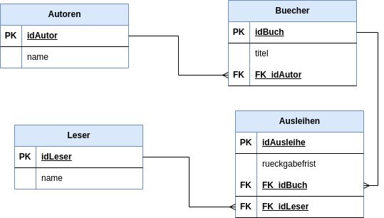

In diesem Arbeitsblatt lernst du, was Primärschlüssel und Fremdschlüssel sind und warum die Regel „Zu jedem Fremdschlüssel muss es einen gültigen Primärschlüssel geben“ wichtig ist. Du arbeitest mit einem einfachen Beispiel: einer Bibliotheks-Datenbank.
Stell dir eine kleine Bibliothek vor. Es gibt Autoren, Bücher (jedes Buch hat einen Autor) und Leser, die Bücher ausleihen. Die Datenbank besteht aus vier Tabellen:

Abb. 1: ERM der Bibliotheks-Datenbank (Tabellen Autoren, Buecher, Leser, Ausleihen; PK = Primärschlüssel, FK = Fremdschlüssel).
Laut ERM oben:
Autoren.idAutorBuecher.idBuch, FK_idLeser → Leser.idLeserEine Tabelle, die einen Fremdschlüssel enthält, heißt Kindtabelle; die Tabelle, auf deren Primärschlüssel der Fremdschlüssel verweist, heißt Elterntabelle. Beispiel: Buecher ist Kind von Autoren, Ausleihen ist Kind von Buecher und Leser.
autoren.idAutor, buecher.idBuch).
buecher.FK_idAutor verweist auf autoren.idAutor.
Zu jedem Fremdschlüsselwert muss es einen passenden Primärschlüsselwert geben.
Wenn jemand z.B. inausleihen einen Eintrag mit FK_idBuch = 999 speichert, muss in der Tabelle buecher tatsächlich ein Buch mit idBuch = 999 existieren. Sonst sind die Daten inkonsistent.
Die referentielle Integrität wird verletzt, wenn Fremdschlüssel „ins Leere“ zeigen oder umgekehrt Primärschlüssel gelöscht werden, auf die noch verwiesen wird.
buecher noch Bücher mit FK_idAutor = 5 stehen.
Im Diagramm oben: Welche Tabelle ist Elterntabelle und welche Kindtabelle in Bezug auf die Beziehung zwischen buecher und ausleihen?
Jemand löscht den Autor mit idAutor = 3 aus der Tabelle autoren. In der Tabelle buecher gibt es noch mehrere Bücher mit FK_idAutor = 3. Was trifft zu?
Du willst einen neuen Autor, ein neues Buch (diesem Autor zugeordnet) und eine neue Ausleihe (dieses Buch, ein bestehender Leser) anlegen. In welcher Reihenfolge musst du die INSERT-Befehle ausführen?
Ordne die Schritte von 1 (zuerst) bis 3 (zuletzt) zu.
In der Tabelle ausleihen wird ein neuer Eintrag eingefügt mit FK_idBuch = 77 und FK_idLeser = 2. In buecher gibt es kein Buch mit idBuch = 77; in leser gibt es den Leser mit idLeser = 2. Welche Anomalie liegt vor?
Formuliere die Grundregel der referentiellen Integrität in einem kurzen Satz (Stichworte reichen).